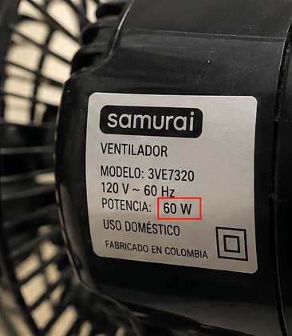
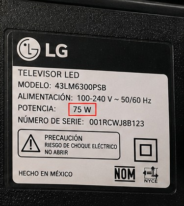
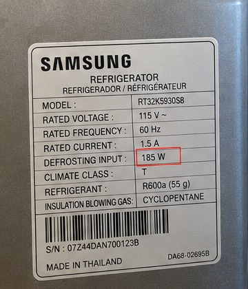
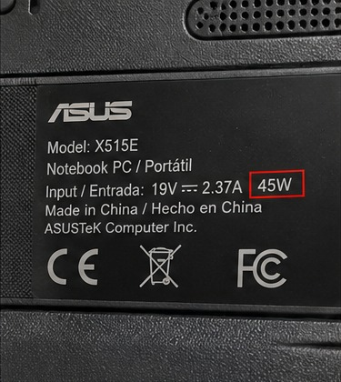

Inventario y consumo semanal
El hogar analizado es una vivienda unipersonal de estrato 2 con un consumo moderado. La siguiente tabla reúne los equipos principales, su potencia y las horas de uso, para estimar cuánto aporta cada uno al consumo de la semana.
Fórmula aplicada: kWh semanal = potencia (W) × horas semanales ÷ 1.000. El costo se obtiene multiplicando el consumo semanal por la tarifa de $750 COP/kWh.
| Equipo | Potencia (W) | Horas lun-vie/día | Horas sáb-dom/día | Consumo semanal (kWh) | Costo semanal (COP) |
|---|---|---|---|---|---|
| Ventilador | 55 | 4 | 6 | 1,76 | $1.320 |
| Televisor | 75 | 2 | 3 | 1,20 | $900 |
| Nevera | 120 | Ciclo intermitente; se estiman 4 h equivalentes/día | 3,36 | $2.520 | |
| Portátil | 45 | 3 | 4 | 1,03 | $773 |
| Total semanal | 7,36 | $5.516 | |||
La siguiente tabla documenta el tipo de evidencia asociada a cada equipo. La celda
«Referencia visual» abarca dos filas mediante rowspan.
| Tipo de dato | Detalle |
|---|---|
| Referencia visual | Etiqueta de potencia del equipo |
| Vista general del equipo en uso |
Etiquetas de potencia de los equipos
En cada etiqueta se consulta la potencia en vatios que se usa para calcular el consumo.



